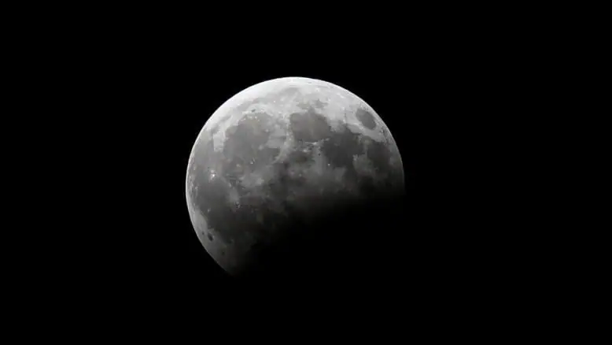
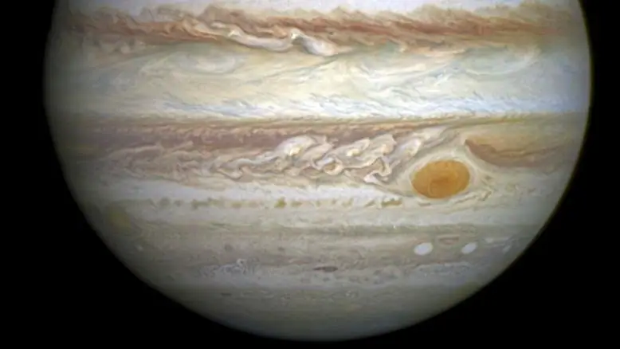
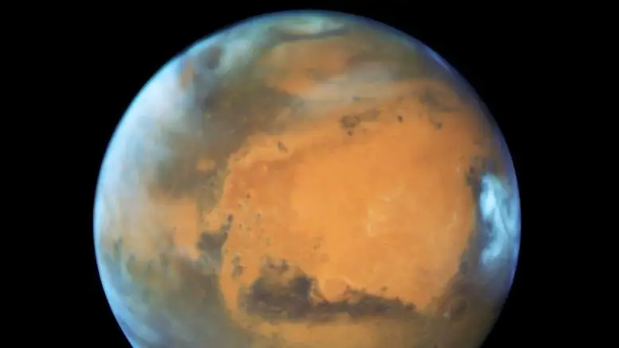
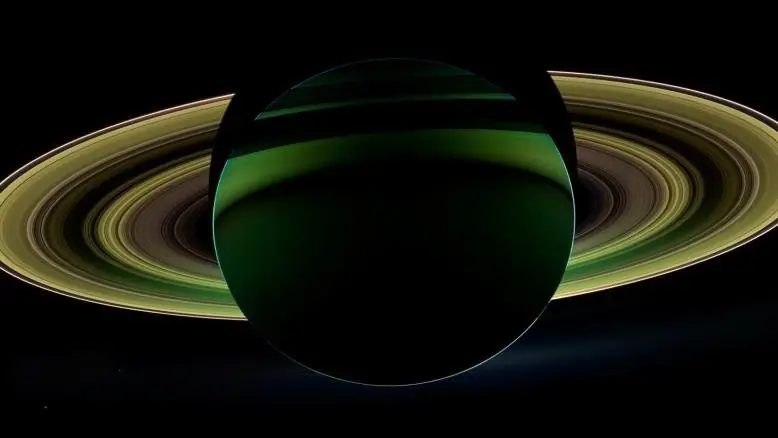

أخبار علمية ·
2018 عام الأحداث الفلكية – هاني الضليع
يعد عام 2018 عاما فلكيا بامتياز لكثرة الأحداث الفلكية التي ستشهدها المنطقة العربية، وكثير من مناطق العالم، حيث سنشهد خسوفين للقمر، وعبورا لكوكب عطارد أمام قرص الشمس، واقترابا تاريخيا لكوكب المريخ بعد غياب 15 سنة، وكذلك لقاء مع كوكبي المشتري وزحل، إضافة إلى عدد من زخات الشهب اللامعة.
ففي الثالث من يناير/كانون الثاني من كل عام تفتتح الأحداث الفلكية السنوية بزخة شهب تدعى زخة شهب الرباعيات، نسبة إلى كوكبة ذات الربع، وهي أداة فلكية كانت تستخدم لقياس زوايا الارتفاع، لكن هذه الكوكبة لم تعد موجودة من بين أبراج السماء بعد اعتراف الاتحاد الفلكي الدولي بالكوكبات السماوية الـ88 عام 1928.
ولأنها شهب جميلة تتراوح أعدادها في السماء الصافية بين 100 و120 شهاباً في الساعة، فقد بقيت في هرم الأحداث الفلكية السنوية وبمسماها التاريخي نفسه.
غير أنه وفي هذا الشهر نفسه، وفي اليوم الأخير منه، سيشهد العالم ثلاثة أحداث قمرية مميزة: أولها أن القمر سيكون بدراً عملاقاً، أي أنه سيكون في أقرب نقطة له من الأرض على مسافة 356 ألف كيلومتر فقط، وسيكون بدراً “أزرق” كناية عن كونه البدر الثاني في الشهر نفسه، وأخيراً سيعبر في ظل الأرض في الفضاء ليشكل لنا خسوفاً قمرياً سيُرى جزئياً من الوطن العربي.
لكن شروق القمر مخسوفاً سيصعب المهمة على الراصدين، فهم لن يعثروا عليه بسهولة لقلة إضاءته، فالقمر أثناء الخسوف الكلي ينير بإضاءة حمراء اللون تتسرب له من الشمس عبر الغلاف الجوي الأرضي، ولولا ذلك لكانت جميع الخسوفات القمرية مظلمة تماماً.

شروق القمر مخسوفاً سيصعب المهمة على الراصدين حيث لن يعثروا عليه بسهولة لقلة إضاءته (رويترز)
وللذين يعشقون الكواكب نادرة الظهور، سيطل علينا كوكب عطارد متألقاً مساء منتصف مارس/آذار بعد غروب الشمس، حين يكون في أبعد نقطة له عنها، وتدعى هذه الظاهرة الاستطالة الشرقية العظمى، حيث سيقع على مسافة من الشمس تبلغ 18.5 درجة.
ولأن عطارد كوكب قريب من الشمس ويدور في مدار داخلي فإن رؤيته تعد لدى الفلكيين تحدياً؛ فقد أطلقت العرب على عطارد اسمه هذا لسرعته وندرة ظهوره في السماء، بل إن علماء مشهورين كغاليليو غاليلي لم ير عطارد في حياته قط.
وبعد نحو شهر من ذلك الحدث، وفي ليلة 22 أبريل/نيسان ستنشط زخة شهب أخرى تدعى شهب القيثاريات، نسبة إلى كوكبة القيثارة أو اللورا التي فيها النجم الشهير فيغا، وهي كتابة محرفة لكلمة “الواقع” نسبة إلى النسر الواقع الذي شبهت العرب نجومه بنسر ضم جناحيه فوقع.
وفي تلك الزخة سيشهد الراصدون عشرين شهاباً كل ساعة، تتبعها بعد شهر زخة شهب الدلويات نسبة إلى برج الدلو، وذلك في السادس من مايو/أيار بعدد شهب يبلغ ستين شهاباً في الساعة، وهذه الشهب هي بقايا المذنب الشهير هالي الذي يزور الأرض مرة كل 76 سنة، كانت آخرها سنة 1986، وسيعود في عام 2061.
بعد ذلك، تبدأ الأحداث الفلكية العظام بالظهور مع ثلاثة كواكب جميلة ولامعة: أولها كوكب المشتري عملاق المجموعة الشمسية الذي سيصل أقرب نقطة له من الأرض في التاسع من مايو/أيار في ظاهرة تدعى التقابل، وهي شروق الكوكب وقت غروب الشمس.
والمشتري الذي لم ولا يخيب آمال هواة الفلك هو أسهل أجرام السماء رصداً بعد القمر، إذ من السهل رؤية معالمه وأقماره حتى بالتلسكوبات الصغيرة؛ ليظل مرئياً بعد تلك الليلة ستة أشهر متتالية.

المشتري من أسهل أجرام السماء رصداً بعد القمر إذ من السهل رؤية معالمه وأقماره حتى بالتلسكوبات الصغيرة (رويترز)
ثم بعد أسبوعين فقط من ظهور المشتري، ستبلغ الشمس منتهى علوها في السماء بما يعرف بالانقلاب الصيفي في 21 يونيو/حزيران. وبدوران الأرض حول الشمس أسبوعين آخرين تكون قد وصلت أبعد نقطة لها في مدارها على مسافة 152 مليون كيلومتر، وذلك في الرابع من يوليو/تموز، رغم أن الفصل صيف، فالفصول لا تتحدد بقرب أو بعد الشمس عن الأرض، لكن بزاوية سقوط أشعة الشمس عليها وطول فترة النهار.
ثم ثانيها كوكب زحل، ذو الحلقات، حين يتقابل مع الأرض في 27 يونيو/حزيران، فيشرق وقت غروب الشمس، ليلتقي هو والأرض في أقرب نقطة لهما في مداريهما حول الشمس، وبظهور كوكب زحل تكون السماء قد تهيأت للراصدين كون كوكب المشتري موجوداً والقمر يظهر ويغيب.
ثم يأتي حدث السنة الأعظم، وهو ظهور كوكب المريخ، الكوكب الأحمر، حيث سيعود بعد غياب 15 عاماً، وذلك ليلة الجمعة 27 يوليو/تموز، إذ هو اللقاء المنتظر منذ عام 2003، فهواة الفلك يرتقبونه من كل أرجاء الدنيا، وبسببه ستفتح مراصد الجامعات والجمعيات الفلكية العربية أمام الجماهير لمشاهدة معالم هذا الكوكب وقطبه الجليدي الجنوبي، حيث سيكون بإمكان هواة الفلك بتلسكوباتهم المتواضعة تمييز بعض المعالم الداكنة على سطحه، إضافة إلى القبعة الجليدية البيضاء.
فاللقاء بين الأرض والمريخ يتكرر كل سنتين، لكن اللقاء الأعظم يتكرر كل 15 و17 سنة على التوالي، وفيه ستبلغ المسافة الفاصلة بين الكوكبين 57 مليون كيلومتر فقط، وهي مسافة مناسبة لأن يرسل الإنسان مسابيره ومركباته الفضائية إلى هذا الكوكب، تماماً كما حدث في لقاء عام 2003، حيث وصلت مركبة الفضاء الأميركية باثفايندر إلى سطح المريخ بعد سبعة أشهر من الطيران، وذلك في الرابع من يوليو/تموز عام 2004، لتكون العربة سوجورنر التي أنزلتها المركبة أول عربة تسير فوق ثرى الكوكب الأحمر في تاريخ البشرية

سيكون بإمكان هواة الفلك بتلسكوباتهم المتواضعة تمييز بعض المعالم الداكنة على سطح المريخ إضافة إلى القبعة الجليدية البيضاء (رويترز)
لكن المفاجأة الكبرى ستحدث بعد ساعتين من مشاهدة حدث كوكب المريخ، فسكان الوطن العربي وما حوله على موعد مع القمر البدر الذي سيدخل في ظل الأرض في حدث مميز جداً هو الخسوف الكلي للقمر.
ففي تمام الساعة 9:25 مساء بتوقيت مكة المكرمة، سيبدأ القمر دخول ظل الأرض لتنحجب عنه أشعة الشمس البيضاء شيئاً فشيئاً، حتى يغيب تماماً ويتحول إلى خسوف كلي في تمام الساعة 10:30 مساء، وسيظهر القمر خلال تلك الفترة بلون أحمر دموي، ثم يبدأ ظل الأرض بالانحسار عنه في تمام الساعة 12:13 بعد منتصف الليل على شكل خسوف جزئي، ولينتهي كامل الخسوف بعد ذلك في تمام الساعة 1:19 صباحاً.
ثم تتوالى الأحداث الفلكية؛ ففي 12 أغسطس/آب تنشط شهب الصيف المعروفة بزخة شهب البرشاويات بمعدل يبلغ مئة شهاب في الساعة، ولأنها شهب العطلة الصيفية، فإن رصدها يكتسب أهمية كبرى لدى هواة الفلك، خاصة أنها تأتي هذا العام مع غياب القمر الذي يؤثر ضوؤه سلباً على عملية الرصد.
وبعد أربعة أيام من هذا الحدث، يصل الكوكب الألمع في السماء كوكب الزهرة إلى أقصى ارتفاع له فوق الشمس بُعيد غروبها، ليحتل المركز الأول لمعاناً وسطوعاً، وبظهوره تجتمع الكواكب الأربعة اللامعة العظمى في السماء: الزهرة والمشتري والمريخ وزحل. وإذا كان القمر الهلال ظاهراً، فإنه يكون قد طاب النظر إلى السماء ساعتئذ.

زحل سيتقابل مع الأرض في 27 يونيو/حزيران فيشرق وقت غروب الشمس، ليلتقي هو والأرض في أقرب نقطة لهما في مداريهما حول الشمس (رويترز)
ثم يتبع ذلك الحدث ثلاث زخات شهابية في كل شهر، ابتداءً من أكتوبر/تشرين الأول؛ ففي 21 منه تنشط زخة شهب الجباريات، نسبة إلى كوكبة الجبار، بمعدل شهب يبلغ 25 شهاباً في الساعة. تتبعها زخة شهب الأسديات، نسبة إلى برج الأسد، وهي ثاني أشهر زخات الشهب السنوية في 17 نوفمبر/تشرين الثاني، بمعدل شهب منخفض جداً هذا العام، ومقداره 15 شهاباً في الساعة.
وثالثها الشهب الألمع والأكثر كثافة، وهي شهب التوأميات، نسبة إلى برج التوأمين، التي تنشط في 13 ديسمبر/كانون الأول بمعدل شهب مرتفع يبلغ 120 شهاباً لامعاً في الساعة، وهذه الأخيرة ستكون أفضل الثلاثة؛ إذ سيكون القمر هلالا فلا يؤثر في عملية الرصد.
وحيث إنه لم يتبق من بين كواكب المجموعة الشمسية سوى نبتون وأورانوس، فإن هذين الكوكبين سيظهران كذلك في شهري سبتمبر/أيلول وأكتوبر/تشرين الأول على التوالي، ليكونا مرئيين بالمنظار، أو ربما يحتاجان إلى تلسكوب صغير بعد معرفة خريطة موقعهما.
وبحلول يوم 21 ديسمبر/كانون الأول، يحل فصل الشتاء بانقلابه الشتوي، وتكون الشمس بلغت منتهى انخفاضها في سماء سكان النصف الشمالي من الكرة الأرضية، ليحل عليهم فيه أطول ليل وأقصر نهار.
المصدر الجزيرة